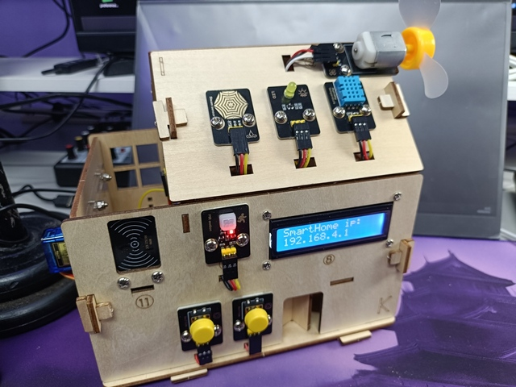
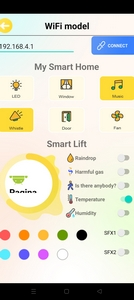

Diegooz GitHub Web Projects
Diegooz GitHub Web Projects
Visit my Site/Blog
Subscribe to my YT
Channel
Visit my Github page
KeyeStudio
SmartHome ESP32
KS5009


IoT Smart Home Access Point Version
WEB INSTALLER
^The simple way^
Not need Arduino IDE
For BeginnerAfter flashing the firmware to the smart home board, turn off and on. When turned on, a "SmartHome" access point will be created with password "12345678".
By connecting to the accesspoint and using the Keyestudio app you can connect to the IP 192.168.4.1 to control the various functions of the house.
For more info: https://fs.keyestudio.com/KS5009
Product page: https://www.keyestudio.com/products/keyestudio-esp32-smart-home-kit-for-esp32-diy-starter-kit-edu
Confirm programming
Other projects back to home.